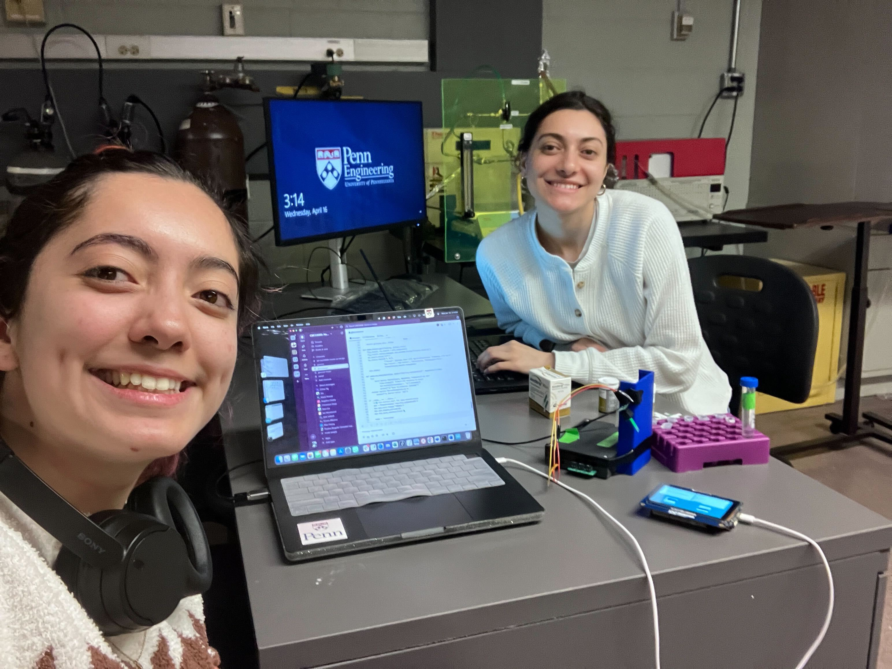

🔄 Arduino GIGA + Python CSV Integration
Test setup for serial communication between Python and the Arduino GIGA to display CSV values on-screen.
✅ Success Looks Like…
📄 CSV value: 42.7
✔️ Sent to Arduino: 42.7The display will now show the concentration.
It works!
🧪 Milestone 4: Potentiostat
We are using the IO Rodeo Rodeostat as our potentiostat circuit base.
Setup Instructions
- Download
potentiostat.pyfrom IO Rodeo GitHub (v0.0.9) - Follow their Installation Guide
- Customize your code and begin testing
Relevant Code Files
This script runs the Rodeostat and calibration with UI compatibility for the Arduino GIGA R1.
Key features: Serial port auto-detection, chronoamperometry execution, signal processing, Arduino communication, and data logging.
Standalone Python GUI for users without Arduino display.
Key features: Simple button interface, daily average calculation, threaded execution for responsiveness.
Core logic supporting both Arduino and GUI workflows.
Key features: Modular architecture, signal processing, Excel/CSV logging, and error handling.
Methodology
- Apply 200 mV step after 6s quiet time.
- Run chronoamperometry for 1s.
- Regress i vs 1/√t and convert slope to concentration.
Calibration Graph

Clarke Error Grid

Data Analysis Pseudocode
-
Load raw chronoamperometry data from Excel/CSV into a DataFrame.
- Extract time, voltage, and current traces.
- Filter current data once the step is applied.
-
Confirm if Cottrell behavior appears (diffusion-limited regime).
- Slide a regression window over current vs 1/√t.
- Identify the region with highest R².
- Extract Cottrell region and fit a linear regression to calculate slope.
-
Choose a calibration model.
- Compare linear vs polynomial models.
- Try a piecewise model to separate low vs high glucose regimes.
- Validate performance using the Clarke Error Grid for diagnostic accuracy.